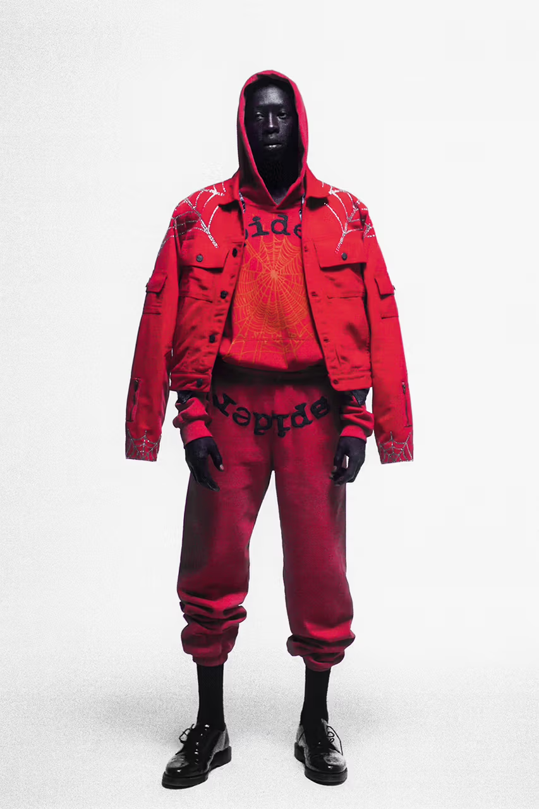
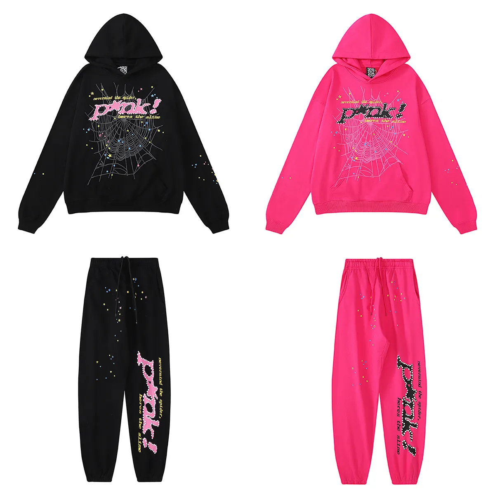
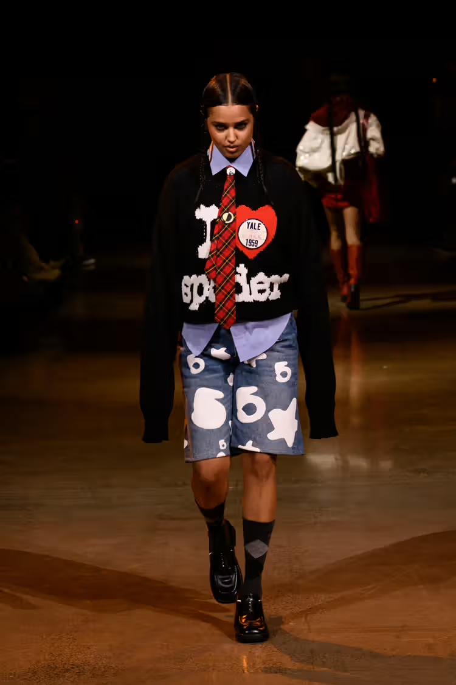
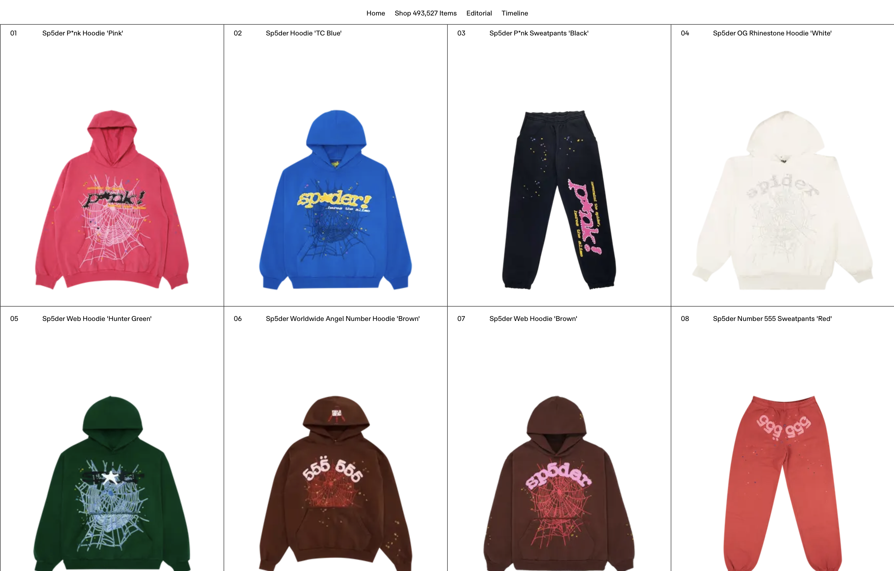

Launch Year (2019)
Young Thug launches Sp5der (initially as Spider Worldwide) as a way to express his personal style and love for streetwear, drawing inspiration from his Atlanta roots.

Early Years (2020–2022)
The brand gains attention for its bold graphics, nostalgic links, and streetwear aesthetic.
Digital Expansion (2023)
Sp5der expands its market beyond the United States, reaching audiences in Asia and Europe.

Global Recognition (2024)
Sp5der presents a collection during New York Fashion Week, showcasing over 35 co-ed looks and solidifying its presence in the high fashion landscape.

Tech Integration (2024)
GOAT features Sp5der on their editorial page, further solidifying the brand's presence in the fashion market.

Future Vision
Sp5der continues to be a popular choice among college athletes and is recognized as a luxury fashion label.